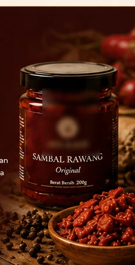
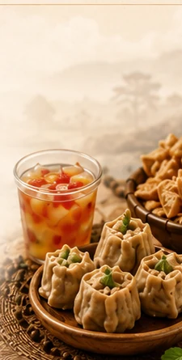

SEDERHANA
Tidak dibuat rumit.
Rumah besar tiga lini AYA. Sebelum memilih produk, kenali dulu makna, fungsi, dan dunia yang menyatukan semuanya.
Rumah bagi AYA Spice Haven, AYA Farm, dan AYA Snacks & Drinks.


SATU NAMA · TIGA DUNIA
RASA
Setiap lini AYA memiliki peran dan fungsi berbeda, namun saling melengkapi untuk menghadirkan pengalaman rasa yang utuh dan bermakna. Dari hasil bumi dan produk primer, menuju olahan berbumbu, hingga camilan dan minuman yang siap dinikmati dalam keseharian.
 TUMBUH
TUMBUH
Hasil pertanian, peternakan, dan produk primer pilihan.
Pelajari lebih lanjut → DIOLAH
DIOLAH
Sambal, rempah, bumbu, pendamping, dan lauk berbumbu untuk menemani hidangan sehari-hari.
Pelajari lebih lanjut →
 DINIKMATI
DINIKMATI
Camilan, frozen snack, makanan siap dinikmati, dan minuman untuk setiap momen.
Pelajari lebih lanjut →
Temukan produk yang dekat dengan kebutuhan Anda, lalu dengarkan bagaimana AYA hadir di meja dan momen keseharian mereka.
Rasa yang dekat dengan keseharian.
Jelajahi tiga lini AYA, temukan produk yang sesuai kebutuhan Anda, dan rasakan ceritanya.